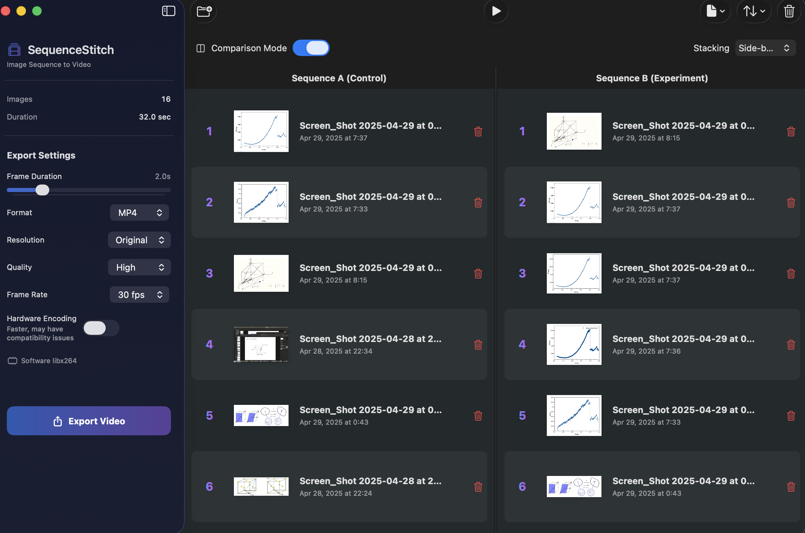

Features
Drag & Drop
Effortlessly import PNG, JPEG, and PDF files with intuitive drag-and-drop support
Batch Import
Import entire folders of images at once with automatic sorting options
Reorder
Rearrange your sequence by dragging rows or using smart sort options
Frame Duration
Precise timing control from 0.1s to 10s per frame
Preview
Play your sequence before exporting with keyboard controls
Save Projects
Save and reload your work for iterative editing
🔀 Comparison Mode
Create side-by-side or top-bottom comparison videos perfect for A/B testing, before/after demonstrations, or experimental validation. Simply toggle comparison mode and drag your sequences to separate panels!
Learn MoreTwo Versions Available
v1 Lite
~2 MB
- Requires FFmpeg via Homebrew
- Minimal file size
- Best for developers
- Fast installation
Getting Started
Single Sequence Mode
- Add Images - Drag files onto the window or use "Open Folder"
- Arrange - Drag rows to reorder, or use Sort menu
- Configure - Set frame duration and export settings
- Preview - Click play to preview the sequence
- Export - Click "Export Video" and choose destination
Comparison Mode
- Enable - Toggle "Comparison Mode" in the toolbar
- Add Sequence A - Drag images to the left panel (Control/Baseline)
- Add Sequence B - Drag images to the right panel (Experiment/Treatment)
- Choose Stacking - Select "Side-by-Side" or "Top-Bottom"
- Export - Creates a comparison video with both sequences